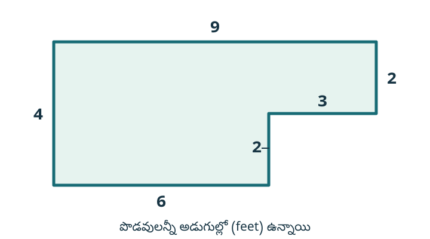
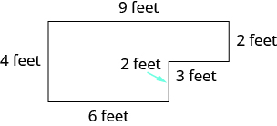

మూలపాఠం అనువాదం · Telugu source translation
జీవిత సందర్భాల సమస్యల్లో పూర్ణాంకాల సంకలనం
పూర్ణాంకాలను కలపడం సాధన చేశాం. ఇప్పుడు నేర్చుకున్నదాన్ని జీవిత సందర్భాల సమస్యలను పరిష్కరించడానికి ఉపయోగిద్దాం. ముందుగా ఒక పద్ధతిని ఏర్పరచుకుందాం. మొదట సమస్యను చదివి, ఏమి కనుక్కోవాలో గుర్తించాలి. దాన్ని కనుక్కోవడానికి అవసరమైన సమాచారాన్ని మాటల్లో రాయాలి. తరువాత ఆ మాటలను గణిత సంకేతాలతో రాసి, విలువ కనుక్కోవాలి. చివరగా ప్రశ్నకు జవాబును ఒక వాక్యంగా రాయాలి.
ఈ సెమిస్టర్లో జరిగిన ఐదు పరీక్షల్లో హావో పొందిన పాయింట్లు . ఆ ఐదు పరీక్షల్లో అతను పొందిన మొత్తం పాయింట్లు ఎన్ని?
పరిష్కారం
పరీక్షల్లో పొందిన మొత్తం పాయింట్లను కనుక్కోవాలి.
చిన్న తెరపై 2 నిలువు వరుసలూ చూడటానికి పట్టికను అడ్డంగా జరపండి.
| మాటల్లో రాయండి. | పరీక్షల్లో పొందిన పాయింట్ల మొత్తం |
| గణిత సంకేతాలతో రాయండి. | |
| తరువాత కలిపి విలువ కనుక్కోండి. | |
| కలపవలసిన సంఖ్యలు అనేకం ఉన్నందున వాటిని నిలువుగా రాస్తాం. | |
| ప్రశ్నకు జవాబును ఒక వాక్యంగా రాయండి. | హావో మొత్తం 432 పాయింట్లు పొందాడు. |
మనం కలిపినవి పాయింట్లు కాబట్టి మొత్తం పాయింట్లు. జీవిత సందర్భాల సమస్యలకు జవాబులు రాసేటప్పుడు తగిన ప్రమాణాలను కూడా పేర్కొనడం ముఖ్యం.
కొన్ని జీవిత సందర్భాల సమస్యల్లో ఆకారాలు ఉంటాయి. ఉదాహరణకు, తోటకు కంచె వేయడానికి దాని చుట్టూ దూరం, లేదా చిత్రానికి చట్రం కట్టడానికి దాని చుట్టూ దూరం తెలియాలి. మూసుకున్న సరిహద్దు గల జ్యామితీయ ఆకారం చుట్టూ, ఆ సరిహద్దు వెంబడి ఉన్న మొత్తం దూరాన్ని చుట్టుకొలత అంటారు. భుజాలు గల ఆకారం చుట్టుకొలత దాని భుజాల పొడవుల మొత్తం.
చిత్రంలో చూపిన ఆరుబయటి చదునైన ప్రదేశం (patio) చుట్టుకొలత కనుక్కోండి.
అన్ని నిలువు వరుసలను చూడటానికి పటాన్ని అడ్డంగా జరపండి.

పరిష్కారం
చిన్న తెరపై 2 నిలువు వరుసలూ చూడటానికి పట్టికను అడ్డంగా జరపండి.
| చుట్టుకొలత కనుక్కోవాలి. | |
| మాటల్లో రాయండి. | భుజాల పొడవుల మొత్తం |
| గణిత సంకేతాలతో రాయండి. | |
| కలిపి విలువ కనుక్కోండి. | |
| ప్రశ్నకు జవాబును ఒక వాక్యంగా రాయండి. | |
| అడుగుల్లో ఉన్న పొడవులను కలిపాం కాబట్టి మొత్తం అడుగులు. | ఆరుబయటి ప్రదేశం చుట్టుకొలత అడుగులు. |
సంపాదకీయ అభ్యాస సహాయం — సందర్భం, సంకలనం, ప్రమాణంతో జవాబు
ఇది మూల పాఠ్యానికి వేరుగా చేసిన అసలు బోధనా జోడింపు. క్రింది వివరణలు, మూడు ప్రవేశ తనిఖీలు, మూడు మళ్లీ ప్రయత్నించే ప్రశ్నలు, పూర్తి సాధనలు ప్రమాణీకరించిన స్థాయి పరీక్ష కాదు. మూలంలోని రెండు ఉదాహరణలు, నాలుగు Try It ప్రశ్నల సంఖ్యలు, సందర్భాలు, జవాబులు మార్చలేదు; వాటికి పూర్తి కారణాలు ఇక్కడ ఇచ్చాం.
Original instructional support. Keep the source quantities and units: test points, miles, students, feet and inches. The added diagnostic and recheck items are editorial practice, not new canonical exercises or a validated grade placement test.
K1 — ఏమి కనుక్కోవాలి? ఏ పరిమాణాలను కలపాలి?
- ప్రశ్నను చదివి కనుక్కోవలసిన పరిమాణాన్ని చెప్పండి: మొత్తం పాయింట్లా, ప్రయాణించిన దూరమా, విద్యార్థుల సంఖ్యా, చుట్టుకొలతా?
- ఆ పరిమాణానికి సంబంధించిన ఇచ్చిన సంఖ్యలను ఒక్కొక్కటిగా గుర్తించండి. ఒకే ప్రమాణంలో ఉన్న, కలపవలసిన భాగాలను ఎంచుకోండి. సమస్యలో కనిపించిన ప్రతి సంఖ్యను విచక్షణ లేకుండా కలపకండి.
- ముందుగా మాటల్లో రాయండి: ఉదాహరణకు “ఐదు పరీక్షల్లో పొందిన పాయింట్ల మొత్తం”. తరువాత గణిత రాత (expression) రాయండి.
- కలిపి విలువ కనుక్కోండి. జవాబులో తగిన ప్రమాణం లేదా లెక్కిస్తున్న వస్తువుల పేరు చేర్చి, పూర్తి వాక్యం రాయండి.
- ఏ భాగమూ వదిలేయలేదా? ఏదైనా రెండుసార్లు కలిపారా? సంఖ్య సరైనదైనా ప్రమాణం మారిపోయిందా? అని తిరిగి తనిఖీ చేయండి.
ఇక్కడ సంకలనం అంటే కలపడం; కలిపే సంఖ్యలు (addends), గణిత రాత (expression), మొత్తం (sum) అనే అర్థం తెలిపే పేర్లు వాడుతున్నాం. అధికారిక TS/AP పరిభాషకు కొత్త సాక్ష్యం ఉన్నట్టు ఈ ఎంపికలను చూపడం లేదు. 12+18+15 ఒక గణిత రాత; 12+18+15=45 దాని విలువను తెలిపే సమానత్వ వాక్యం. కేవలం లెక్క సరిపోదు: పుస్తకాల సమస్య అయితే “మొత్తం 45 పుస్తకాలు” అని చెప్పాలి.
మూలంలోని వ్యక్తులు, పాఠశాల, సెమిస్టర్, వారంలోని రోజులు యథాతథ సందర్భాలు. miles అంటే మైళ్లు, feet అంటే అడుగులు, inches అంటే అంగుళాలు. ఇక్కడ వాటిని కిలోమీటర్లు లేదా సెంటీమీటర్లుగా మార్చడం లేదు. పరీక్షల పాయింట్ల మొత్తం శాతం లేదా సగటు కాదు. పాఠశాలలోని “మూడు తరగతి స్థాయులు” అనేది మూడు వేర్వేరు విద్యార్థుల సమూహాలను సూచిస్తుంది; వాటిని ఏ తరగతి సంఖ్యలుగా అనుకోవాలో మూలం చెప్పలేదు.
K2 — బదిలీ చేసే అంకె ఎప్పుడూ 1 కావాల్సిన అవసరం లేదు
అనేక సంఖ్యలను కలిపితే ఒకట్ల మొత్తం 32 కావచ్చు. అది 32=30+2, అంటే 3 పదులు, 2 ఒకట్లు. ఒకట్ల స్థానంలో 2 రాసి, పదుల స్థానానికి 3 పదులను బదిలీ చేయాలి. బదిలీగా రాసిన 3 ఇక్కడ 3 ఒకట్లు కాదు; దాని విలువ 3×10=30. మొత్తం విలువ మారలేదు.
పదుల నిలువు వరుసలో వచ్చిన మొత్తం 43 పదులైతే, అది 4 వందలు, 3 పదులు. పదుల స్థానంలో 3 రాసి, వందల స్థానానికి 4 వందలను బదిలీ చేయాలి. చివరి సమాధానంలో వందలు, పదులు, ఒకట్ల స్థానాలను విడిగా ఉంచండి. రాసిన సున్నను తీసివేస్తే స్థానాలు మారవచ్చు: 140లో ఒకట్ల స్థానంలో 0 ఉండాలి; 14 అని రాయకండి.
క్రింది బదిలీ పట్టికల్లో “నిలువు వరుస లెక్క”లోని సంఖ్యలు ఆ స్థానపు ప్రమాణాల లెక్కలు. ఒకట్ల వరుసలో ఒకట్లు, పదుల వరుసలో పదులు, వందల వరుసలో వందలు కలుపుతున్నాం. “తరువాతి స్థానానికి బదిలీ”లోని సంఖ్యను అసలు మొత్తానికి మరోసారి అదనంగా కలపకండి; ఇప్పటికే కలిపిన పరిమాణాన్ని వేరే స్థానపు ప్రమాణాలుగా మళ్లీ అమర్చుతున్నాం.
K3 — చుట్టుకొలతకు సరిహద్దు వెంబడి ఒకసారి పూర్తిగా తిరగండి
చుట్టుకొలత (perimeter) అంటే మూసుకున్న ఆకారం సరిహద్దు వెంబడి ఒక పూర్తి చుట్టు తిరిగి రావడానికి ప్రయాణించవలసిన మొత్తం దూరం. ఈ పాఠంలోని భుజాలు గల ఆకారాలకు, అన్ని సరిహద్దు భుజాల పొడవులను ఒక్కొక్కసారి కలపాలి. ఒక మూల దగ్గర ప్రారంభించి, ఒకే దిశలో సరిహద్దును అనుసరించండి. లోపలికి తిరిగిన మలుపుల్లో ఉన్న చిన్న భుజాలూ సరిహద్దులో భాగమే; వాటిని వదిలేయకండి. ప్రారంభ మూలకు చేరగానే ఆపండి.
భుజాల సంఖ్యను లెక్కించడం, వాటి పొడవులను కలపడం వేరు. నాలుగు భుజాలున్నాయని చుట్టుకొలత 4 అని చెప్పలేం. అలాగే లోపలి ప్రదేశాన్ని కొలిచే వైశాల్యం (area), చుట్టూ దూరాన్ని కొలిచే చుట్టుకొలత వేరు. ఇక్కడ అడిగింది పొడవు కాబట్టి అడుగులు లేదా అంగుళాలు వాడాలి; చదరపు అడుగులు లేదా చదరపు అంగుళాలు కాదు.
చిత్రాన్ని తెరపై కొలవడం వల్ల ముద్రిత భుజాల పొడవులు తెలియవు. ఇచ్చిన లేబుళ్లను వాడండి; లేబుల్ లేని కొత్త రేఖలు ఊహించి కలపకండి. సరిహద్దు అంతా ఎంచుకున్నామా అని లెక్కను తిరిగి సరిహద్దుతో సరిపోల్చండి.
రెండు మూల ఉదాహరణలకు పూర్తి కారణాలు
హావో — ఐదు పరీక్షల మొత్తం పాయింట్లు
మూల ఉదాహరణ. ఇచ్చిన పాయింట్లు 87, 93, 68, 95, 89. కనుక్కోవలసింది ఐదు పరీక్షల మొత్తం; పరీక్షల సంఖ్య 5ను మరో పాయింట్ల పరిమాణంగా కలపకూడదు.
మాటల్లో: ఐదు పరీక్షల్లో పొందిన పాయింట్ల మొత్తం. గణిత రాత: 87+93+68+95+89.
చిన్న తెరపై 4 నిలువు వరుసలూ చూడటానికి పట్టికను అడ్డంగా జరపండి.
| స్థానం | నిలువు వరుస లెక్క | ఈ స్థానంలో రాసే అంకె | తరువాతి స్థానానికి బదిలీ |
|---|---|---|---|
| ఒకట్లు | 7+3+8+5+9=32 | 2 | 3 పదులు |
| పదులు | 8+9+6+9+8+3=43 | 3 | 4 వందలు |
| వందలు | 0+0+0+0+0+4=4 | 4 | 0 వేల ప్రమాణాలు; ఇక బదిలీ లేదు |
మూల నిలువు లెక్కలో 87లోని 8 పైన ఉన్న చిన్న 3, ఒకట్ల నుంచి వచ్చిన 3 పదులు. అది భిన్నం కాదు. వందల వరుసలో కలిపే సంఖ్యలకు వందలు లేవు; వచ్చిన 4 వందలే ఉంటాయి. ఫలితం 4 వందలు, 3 పదులు, 2 ఒకట్లు.
లెక్క: 87+93+68+95+89=432. జవాబు: హావో మొత్తం 432 పాయింట్లు పొందాడు.
మరో సమూహీకరణతో తనిఖీ: 87+93=180; 68+95=163; 180+163+89=432. ఐదు పరీక్షలూ ఒక్కొక్కసారి చేరాయి. ఇది మొత్తం; సగటు లేదా శాతం అడగలేదు.
ఆరుబయటి ప్రదేశం — ఆరు భుజాల చుట్టుకొలత
మూల ఉదాహరణ. ఆరు సరిహద్దు భుజాల పొడవులు అన్నీ అడుగుల్లో ఉన్నాయి. కనుక్కోవలసింది సరిహద్దు చుట్టూ దూరం, లోపలి వైశాల్యం కాదు.
మాటల్లో: ఆరు భుజాల పొడవుల మొత్తం. మూల పరిష్కార క్రమంలో గణిత రాత: 4+6+2+3+2+9. ఎడమ భుజం, కింది భుజం, లోపలి మలుపులోని 2 అడుగుల భుజం, 3 అడుగుల భుజం, కుడి 2 అడుగుల భుజం, పై భుజం — ప్రతి భుజం ఒక్కసారి చేరుతుంది.
వరుసగా కలిపితే 4+6=10; 10+2=12; 12+3=15; 15+2=17; 17+9=26. కాబట్టి 4+6+2+3+2+9=26.
జవాబు: ఆరుబయటి ప్రదేశం చుట్టుకొలత 26 అడుగులు. ఆరు అనేది భుజాల సంఖ్య; 26 అనేది వాటి పొడవుల మొత్తం. రెండు చిన్న 2 అడుగుల భుజాలనూ కలపాలి; “2 రెండుసార్లు కనిపించింది” అని ఒకదాన్ని తీసివేయకూడదు.
తిరిగి తనిఖీ: పై నుంచి మరో దిశలో తీసుకున్నా 9+2+3+2+6+4=26. అదే ఆరు భుజాల పొడవులు, అదే అడుగుల ప్రమాణం.
నాలుగు మూల Try It ప్రశ్నల పూర్తి సాధనలు
ముందుగా మీరే మాటలు, గణిత రాత, లెక్క, ప్రమాణంతో జవాబు రాయండి. తరువాత సంబంధిత సాధనను తెరవండి.
మార్క్ — వారంలో సైకిల్ తొక్కిన మొత్తం దూరం
మూల Try It. సోమవారం 18, బుధవారం 15, శుక్రవారం 26, శనివారం 49, ఆదివారం 32 మైళ్లు ఇచ్చారు. మాటల్లో: ఇచ్చిన ఐదు రోజుల దూరాల మొత్తం. గణిత రాత: 18+15+26+49+32.
చిన్న తెరపై 4 నిలువు వరుసలూ చూడటానికి పట్టికను అడ్డంగా జరపండి.
| స్థానం | నిలువు వరుస లెక్క | ఈ స్థానంలో రాసే అంకె | తరువాతి స్థానానికి బదిలీ |
|---|---|---|---|
| ఒకట్లు | 8+5+6+9+2=30 | 0 | 3 పదులు |
| పదులు | 1+1+2+4+3+3=14 | 4 | 1 వంద |
| వందలు | 0+0+0+0+0+1=1 | 1 | 0 వేల ప్రమాణాలు; ఇక బదిలీ లేదు |
ఒకట్ల మొత్తం 30 కాబట్టి 0 ఒకట్లు తప్పక రాయాలి; 3 పదులను పదుల వరుసకు బదిలీ చేయాలి. ఫలితం 1 వంద, 4 పదులు, 0 ఒకట్లు. 18+15+26+49+32=140.
జవాబు: మార్క్ గత వారం మొత్తం 140 మైళ్లు సైకిల్ తొక్కాడు. రోజుల పేర్లు సంఖ్యలకు సరిపోలుతున్నాయో చూడండి. మంగళవారం, గురువారం దూరాలను సమస్య ఇవ్వలేదు; ఆ రోజులకు కొత్త దూరాలు లేదా తప్పనిసరిగా 0 అని ఊహించి చేర్చడం లేదు. మూల సమస్య అడిగిన మొత్తం, ఇచ్చిన దూరాల ఆధారంగా లెక్కించాం.
మరో తనిఖీ: 18+32=50; 15+26+49=90; 50+90=140. 140 కిలోమీటర్లు అని ప్రమాణాన్ని మార్చకండి.
లింకన్ మిడిల్ స్కూల్ — మొత్తం విద్యార్థులు
మూల Try It. మూడు తరగతి స్థాయుల్లో 230, 165, 325 మంది ఉన్నారు. మాటల్లో: మూడు సమూహాల్లోని విద్యార్థుల మొత్తం. గణిత రాత: 230+165+325. మూడు అనేది సమూహాల సంఖ్య; మరో 3 మంది విద్యార్థుల పరిమాణం కాదు.
చిన్న తెరపై 4 నిలువు వరుసలూ చూడటానికి పట్టికను అడ్డంగా జరపండి.
| స్థానం | నిలువు వరుస లెక్క | ఈ స్థానంలో రాసే అంకె | తరువాతి స్థానానికి బదిలీ |
|---|---|---|---|
| ఒకట్లు | 0+5+5=10 | 0 | 1 పది |
| పదులు | 3+6+2+1=12 | 2 | 1 వంద |
| వందలు | 2+1+3+1=7 | 7 | 0 వేల ప్రమాణాలు; ఇక బదిలీ లేదు |
ఒకట్ల నుంచి వచ్చిన 1 పదిని పదుల లెక్కలోనూ, పదుల నుంచి వచ్చిన 1 వందను వందల లెక్కలోనూ చేర్చాం. 7 వందలు, 2 పదులు, 0 ఒకట్లు వచ్చాయి. 230+165+325=720.
జవాబు: లింకన్ మిడిల్ స్కూల్లో మొత్తం 720 మంది విద్యార్థులు ఉన్నారు. 720 తరగతులు అని రాయకండి. తనిఖీ: 165+325=490; 490+230=720.
మొదటి ఎనిమిది భుజాల ఆకారం — అంగుళాల్లో చుట్టుకొలత
మూల Try It. ఎడమ భుజం నుంచి సరిహద్దును అనుసరిస్తే పొడవులు 4, 9, 4, 3, 2, 3, 2, 3 అంగుళాలు. మాటల్లో: ఎనిమిది భుజాల పొడవుల మొత్తం. గణిత రాత: 4+9+4+3+2+3+2+3.
వరుసగా కలిపితే 4+9=13; 13+4=17; 17+3=20; 20+2=22; 22+3=25; 25+2=27; 27+3=30. అందువల్ల 4+9+4+3+2+3+2+3=30.
జవాబు: చుట్టుకొలత 30 అంగుళాలు. పొడవు 3 అంగుళాలు ఉన్న మూడు వేర్వేరు భుజాలు, 2 అంగుళాలు ఉన్న రెండు వేర్వేరు భుజాలు ఉన్నాయి. ఒకే పొడవు మళ్లీ కనిపించినా భుజం వేరైతే దానిని కూడా కలపాలి.
సమూహాలుగా తనిఖీ: 4+4=8; 3+3+3=9; 2+2=4; 8+9+4+9=30. చివరి 9 పై భుజం పొడవు; ముందు వచ్చిన 9 మూడు చిన్న భుజాల మొత్తం. రెండు వేర్వేరు భాగాలను సూచిస్తున్నాయి.
రెండవ ఎనిమిది భుజాల ఆకారం — ప్రతి మలుపునూ అనుసరించండి
మూల Try It. సరిహద్దు వెంబడి గడియారపు ముళ్లు తిరిగే దిశలో పొడవులు 2, 12, 6, 4, 2, 4, 2, 4 అంగుళాలు. మాటల్లో: ఎనిమిది భుజాల పొడవుల మొత్తం. గణిత రాత: 2+12+6+4+2+4+2+4.
వరుసగా కలిపితే 2+12=14; 14+6=20; 20+4=24; 24+2=26; 26+4=30; 30+2=32; 32+4=36. అందువల్ల 2+12+6+4+2+4+2+4=36.
జవాబు: చుట్టుకొలత 36 అంగుళాలు. మూడు 2 అంగుళాల భుజాలు, మూడు 4 అంగుళాల భుజాలు, ఒక 12 అంగుళాల భుజం, ఒక 6 అంగుళాల భుజం — ఎనిమిదీ చేరాలి. కేవలం పై 12, కుడి 6 భుజాలను మాత్రమే కలపడం పూర్తి చుట్టు కాదు.
మరో తనిఖీ: 2+2+2=6; 4+4+4=12; 6+12+12+6=36. అంతా అంగుళాల్లోనే ఉంది; జవాబు అడుగులు లేదా చదరపు అంగుళాలు కాదు.
ఏ సహాయం అవసరమో గుర్తించండి
ప్రతి ప్రవేశ ప్రశ్నను ముందుగా ప్రయత్నించండి. తప్పు అయితే సూచించిన వివరణను చదివి, మూల ప్రశ్నను మళ్లీ చూడండి; తరువాత కొత్త మళ్లీ-ప్రయత్నించే ప్రశ్న చేయండి. సంఖ్య సరైనదైనా కోరిన పరిమాణం, ప్రమాణం, కారణం సరైందో చూడాలి. ఈ మార్గదర్శకం అధికారిక ఉత్తీర్ణత లేదా స్థాయి నిర్ణయం కాదు.
చిన్న తెరపై 3 నిలువు వరుసలూ చూడటానికి పట్టికను అడ్డంగా జరపండి.
| ప్రవేశ తనిఖీ | తప్పు కనిపిస్తే | మళ్లీ ప్రయత్నం |
|---|---|---|
| D01: మొత్తం, లెక్కించే వస్తువు | K1 చదివి విద్యార్థుల మూల ప్రశ్న చూడండి. | R01 |
| D02: 3 పదుల బదిలీ | K2 చదివి హావో మూల ఉదాహరణ చూడండి. | R02 |
| D03: అన్ని భుజాలు, సరైన ప్రమాణం | K3 చదివి ఎనిమిది భుజాల మూల ప్రశ్న చూడండి. | R03 |
మూడు ప్రవేశ తనిఖీలు, మూడు మళ్లీ ప్రయత్నాలు
D01. ఒక గ్రంథాలయంలో మూడు అరల్లో వరుసగా 12, 18, 15 పుస్తకాలు ఉన్నాయి. మొత్తం పుస్తకాలు ఎన్ని? మాటల్లో, గణిత రాతగా, ప్రమాణంతో జవాబుగా రాయండి. మూడు అరలు అన్న సమాచారంలోని 3ను ఎందుకు అదనపు పుస్తకాలుగా కలపకూడదో చెప్పండి. సాధన
R01. మూడు ఆటలలో ఒక జట్టు వరుసగా 16, 14, 20 పాయింట్లు పొందింది. మొత్తం పాయింట్లు ఎన్ని? గణిత రాత, పూర్తి జవాబు రాయండి; ఆటల సంఖ్యను పాయింట్లతో కలపకండి. సాధన
D02. నాలుగు రౌండ్లలో వచ్చిన పాయింట్లు 18, 29, 37, 46. మొత్తం పాయింట్లు కనుక్కోండి. ఒకట్ల లెక్క నుంచి ఎన్ని పదులు బదిలీ చేయాలో, ఎందుకో చూపండి. సాధన
R02. నాలుగు రౌండ్లలో వచ్చిన పాయింట్లు 29, 38, 47, 56. మొత్తం పాయింట్లు కనుక్కోండి. ఒకట్ల స్థానంలో రాసే అంకె, పదుల స్థానానికి చేసే బదిలీ వేరుగా చెప్పండి. సాధన
D03. ఒక దీర్ఘచతురస్రం నాలుగు భుజాల పొడవులు సరిహద్దు వెంబడి వరుసగా 6, 4, 6, 4 అంగుళాలు. చుట్టుకొలత కనుక్కోండి. ప్రతి భుజాన్ని ఒక్కసారి తీసుకున్న లెక్క, పొడవు ప్రమాణంతో జవాబు రాయండి. భుజాల సంఖ్యను జవాబుగా ఇవ్వకండి. సాధన
R03. మరో దీర్ఘచతురస్రం నాలుగు భుజాల పొడవులు సరిహద్దు వెంబడి వరుసగా 7, 3, 7, 3 అడుగులు. చుట్టుకొలత కనుక్కోండి. D03 జవాబులోని ప్రమాణాన్ని కాపీ చేయకుండా ఈ సమస్య ఇచ్చిన ప్రమాణాన్ని వాడండి. సాధన
తనిఖీల పూర్తి సాధనలు
D01 సాధన — అరలు కాదు, పుస్తకాలు
మాటల్లో: మూడు అరల్లోని పుస్తకాల మొత్తం. గణిత రాత: 12+18+15. ముందుగా 12+18=30; తరువాత 30+15=45. కాబట్టి 12+18+15=45.
జవాబు: మొత్తం 45 పుస్తకాలు ఉన్నాయి. మూడు అరలు అన్నది పుస్తకాల సమూహాల సంఖ్య. అదనంగా 3 పుస్తకాలు ఇచ్చినట్లు కాదు. 45 అరలు అని రాసినా కోరిన పరిమాణం మారుతుంది.
R01 సాధన — ఆటలు కాదు, పాయింట్లు
మాటల్లో: మూడు ఆటల్లో పొందిన పాయింట్ల మొత్తం. గణిత రాత: 16+14+20. 16+14=30; 30+20=50. కాబట్టి 16+14+20=50.
జవాబు: జట్టు మొత్తం 50 పాయింట్లు పొందింది. మూడు ఆటలు అన్న 3ను పాయింట్లకు అదనంగా కలపలేదు; ఇచ్చిన మూడు పాయింట్ల పరిమాణాలనూ ఒక్కసారి కలిపాం.
D02 సాధన — 30 ఒకట్లు అంటే 3 పదులు
గణిత రాత: 18+29+37+46. నాలుగు రౌండ్ల పాయింట్లను కలపాలి.
చిన్న తెరపై 4 నిలువు వరుసలూ చూడటానికి పట్టికను అడ్డంగా జరపండి.
| స్థానం | నిలువు వరుస లెక్క | ఈ స్థానంలో రాసే అంకె | తరువాతి స్థానానికి బదిలీ |
|---|---|---|---|
| ఒకట్లు | 8+9+7+6=30 | 0 | 3 పదులు |
| పదులు | 1+2+3+4+3=13 | 3 | 1 వంద |
| వందలు | 0+0+0+0+1=1 | 1 | 0 వేల ప్రమాణాలు; ఇక బదిలీ లేదు |
30 ఒకట్లు 3 పదులు, 0 ఒకట్లు. అందుకే బదిలీ 3, కేవలం 1 కాదు. పదుల మొత్తం 13 అంటే 1 వంద, 3 పదులు. 18+29+37+46=130.
జవాబు: మొత్తం 130 పాయింట్లు. తనిఖీ: 18+29=47; 37+46=83; 47+83=130. చివరి 0 ఒకట్ల స్థానాన్ని ఉంచుతుంది.
R02 సాధన — 0 రాయడం, 3 బదిలీ చేయడం
గణిత రాత: 29+38+47+56. నాలుగు పాయింట్ల పరిమాణాలూ చేరాలి.
చిన్న తెరపై 4 నిలువు వరుసలూ చూడటానికి పట్టికను అడ్డంగా జరపండి.
| స్థానం | నిలువు వరుస లెక్క | ఈ స్థానంలో రాసే అంకె | తరువాతి స్థానానికి బదిలీ |
|---|---|---|---|
| ఒకట్లు | 9+8+7+6=30 | 0 | 3 పదులు |
| పదులు | 2+3+4+5+3=17 | 7 | 1 వంద |
| వందలు | 0+0+0+0+1=1 | 1 | 0 వేల ప్రమాణాలు; ఇక బదిలీ లేదు |
ఒకట్ల స్థానంలో 0 రాసి, పదుల స్థానానికి 3 పదులు బదిలీ చేశాం. పదుల వరుసలో వచ్చిన 17 నుంచి 7 పదులు రాసి, 1 వంద బదిలీ చేశాం. 29+38+47+56=170.
జవాబు: మొత్తం 170 పాయింట్లు. మరో తనిఖీ: 29+56=85; 38+47=85; 85+85=170. రెండు వేర్వేరు జతల మొత్తాలు సమానంగా రావచ్చు; రెండు జతలనూ కలపాలి.
D03 సాధన — నాలుగు భుజాల పొడవుల మొత్తం
సరిహద్దు వెంబడి నాలుగు భుజాలూ ఒక్కసారి తీసుకుంటే గణిత రాత 6+4+6+4. జతలుగా 6+4=10; 10+10=20. కాబట్టి 6+4+6+4=20.
జవాబు: చుట్టుకొలత 20 అంగుళాలు. 4 అనేది భుజాల సంఖ్య మాత్రమే. 20 చదరపు అంగుళాలు అంటే వైశాల్య ప్రమాణం; ఇక్కడ సరిహద్దు పొడవు అడిగారు కాబట్టి అంగుళాలే సరైనవి.
R03 సాధన — అదే సంఖ్య వచ్చినా ప్రమాణం వేరు
ఇచ్చిన నాలుగు భుజాల పొడవులను ఒక్కసారి కలిపితే 7+3+7+3. 7+3=10; 10+10=20. అందువల్ల 7+3+7+3=20.
జవాబు: చుట్టుకొలత 20 అడుగులు. D03లో 20 అంగుళాలు, ఇక్కడ 20 అడుగులు వచ్చాయి. సంఖ్య 20 ఒకటే అయినా, వేర్వేరు ప్రమాణాల్లో ఉన్న ఈ పొడవులను సమాన దూరాలని అనుకోకండి. కొత్త సమస్య ఇచ్చిన ప్రమాణాన్ని చదవడం కూడా నైపుణ్యంలో భాగం.
మూలంలోని మూడు అదనపు ఆన్లైన్ వనరుల లింకులు అలాగే ఉన్నాయి. అవి ఇక్కడి తెలుగు పాఠ్యానికి బయటివి; ఈ స్థానిక పాఠం వాటి ప్రస్తుత అందుబాటు, భాష లేదా కార్యాచరణను ధృవీకరించడం లేదు. అవి తెరుచుకోకపోయినా ఈ విభాగంలోని పూర్తి సాధనలతో అభ్యాసం కొనసాగించవచ్చు. పై జోడింపులు ఆ బాహ్య వనరుల విషయాన్ని అనువదించామని లేదా వాటిని పూర్తి చేశామని సూచించవు.
Read the parallel canonical English subsection
Add Whole Numbers in Applications
Now that we have practiced adding whole numbers, let’s use what we’ve learned to solve real-world problems. We’ll start by outlining a plan. First, we need to read the problem to determine what we are looking for. Then we write a word phrase that gives the information to find it. Next we translate the word phrase into math notation and then simplify. Finally, we write a sentence to answer the question.
Hao earned grades of on the five tests of the semester. What is the total number of points he earned on the five tests?
Solution
We are asked to find the total number of points on the tests.
Scroll sideways to see all 2 content columns.
| Write a phrase. | the sum of points on the tests |
| Translate to math notation. | |
| Then we simplify by adding. | |
| Since there are several numbers, we will write them vertically. | |
| Write a sentence to answer the question. | Hao earned a total of 432 points. |
Notice that we added points, so the sum is points. It is important to include the appropriate units in all answers to applications problems.
Some application problems involve shapes. For example, a person might need to know the distance around a garden to put up a fence or around a picture to frame it. The perimeter is the distance around a geometric figure. The perimeter of a figure is the sum of the lengths of its sides.
Find the perimeter of the patio shown.
Scroll sideways to inspect every column.

Solution
Scroll sideways to see all 2 content columns.
| We are asked to find the perimeter. | |
| Write a phrase. | the sum of the sides |
| Translate to math notation. | |
| Simplify by adding. | |
| Write a sentence to answer the question. | |
| We added feet, so the sum is feet. | The perimeter of the patio is feet. |